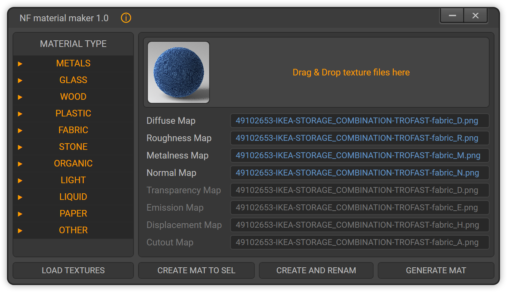

MATERIAL MAKER

LOAD TEXTURES ➔ Loading texture files from disk (you can select one texture from the set, and the remaining textures will be loaded automatically)
CREATE MAT TO SEL ➔ Create material for the selected object (textures are copied to the textures folder if they are not already there)
CREATE AND RENAM ➔ Create material for the selected object with texture renaming based on the object name (textures are copied to the textures folder if they are not already there)
GENERATE MAT ➔ (in development)
MATERIAL TYPE ➔ (in development)